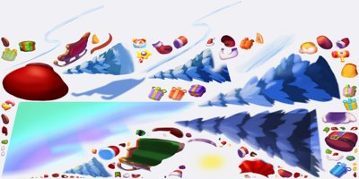

Ảnh chụp màn hình
Dùng potion từ màn chơi để xây hội chợ Giáng Sinh.
Mô tả
- Christmas Town Fair là sự kiện xây dựng theo mùa: người chơi dùng potion kiếm từ màn chơi để lần lượt dựng các hạng mục trang trí hội chợ.
- Mỗi bước xây tốn potion và cộng điểm tiến trình (pumpkin); đạt mốc sẽ mở thưởng và khung ảnh hồ sơ.
- BuildingChristmasDataController kế thừa BaseBuildingEventDataController nên dùng chung logic với building Halloween.
- Đi kèm là Santa's Mission - minigame sắp xếp quà ẩn - vừa cho thưởng vừa cấp thêm potion cho việc xây dựng.
Còn thiếu / chưa xác minh
Mở khóa & điểm vào
Christmas Town Fair (building) mở ở màn 50 (BuildingChristmasDataController.get_levelUnlock đọc RemoteConfig; remoteconfig_defaults levelUnlockBuildingChristmas=50). Santa's Mission mở ở màn 20 (levelUnlockChristmas=20), có teaser từ màn 10 (levelIntroChirstmass=10). Icon building hiện từ màn 15 (BaseBuildingEventDataController.levelShowIcon=15). Tất cả còn phụ thuộc cửa sổ thời gian (timeActive) lấy từ RemoteConfig.
Điểm vào:
- Icon Hội Chợ trên Home (IsShowIcon, levelShowIcon=15)
- Popup building (UIPopup_BuildingChristmas) và popup xem trước (Preview)
- Popup Santa's Mission (UIPopup_MagicCauldron) qua ChristmasDataController
- Deeplink 'EventChristmas' / 'EventChristmas_UA'
Cách hoạt động
- Thắng màn chính -> GetRandomPotionFromLevel + GetMultiplePotionInLevel(streak<=4) -> AddPotion.
- Build(step) trừ potionRequire (BuildingHalloweenStepBuildSheet) và cộng pumpkinReward.
- Pumpkin đạt mốc -> ClaimProgressReward + ClaimFrame (BuildingHalloweenRewardSheet).
- Santa's Mission: thu Hidden Gifts, sắp đúng thứ tự (MatchColorBase), mỗi màn trả potionReward về building.
- Shop: building bán potion qua gói gs_black_friday_*; Santa's Mission bán gói theo phân khúc (ChristmasPack_*).
Luồng chi tiết theo code
BaseBuildingEventDataController.Init dựng dữ liệu BuildingHalloweenData (dùng chung cho Christmas), UpdateTimeFromRemoteConfig đặt mốc bắt đầu/kết thúc. Người chơi Join tham gia. Mỗi màn chính thắng được cộng potion (GetRandomPotionFromLevel, nhân theo streak tối đa maxStreak=4 qua GetMultiplePotionInLevel; AddPotion). Trong popup building, mỗi bước xây (Build(step)) tốn potionRequire của bước đó (BuildingHalloweenStepBuildSheet) và trả về pumpkinReward (ở Christmas là điểm tiến trình). Tích đủ pumpkin tới các mốc (BuildingHalloweenRewardSheet theo pumpkinRequire) thì ClaimProgressReward nhận thưởng mốc, ClaimFrame nhận khung ảnh (FrameCollectionController). Hoàn tất tất cả hạng mục -> IsDoneAll, GetGrandResources cho thưởng lớn. Song song, Santa's Mission (ChristmasDataController) cho người chơi thu 'Hidden Gifts' từ màn (Christmas_LevelSheet.givenItems) để suy luận và sắp đúng thứ tự quà trên bàn (MatchColorBase), mỗi màn trả potionReward về cho building. Hết giờ -> ConfirmEnd, SetDataToDefault; mọi thao tác Save + UpdateDataToServer.
Ảnh chụp màn hình (1)
. Bấm ảnh để phóng to; nhãn UC dẫn tới use case tương ứng.


Phần thưởng
Phần thưởng theo code
| Ngữ cảnh | Phần thưởng | Evidence |
|---|---|---|
| Thưởng mốc tiến trình building | rewardTypes[]/rewardValues[] frame | BaseBuildingEventDataController.GetProgressRewardResources; ClaimFrame |
| Thưởng lớn khi xây xong | GetGrandResources | BaseBuildingEventDataController.GetGrandResources |
| Thưởng mỗi màn Santa's Mission + potion | Christmas_LevelSheet.rewardValues potionReward | ChristmasDataController.ClaimReward; Christmas_LevelSheet.Get |
Số liệu chính
| Chỉ số | Giá trị | Nguồn |
|---|---|---|
| ||
| ||
| ||
| ||
| ||
|
Use case (7)
Bấm vào từng use case để mở. Mở/đóng tất cả
UC-01 Nhận potion khi thắng màn (có streak)
Các bước- CompleteLevel ghi nhận thắng
- GetRandomPotionFromLevel tính potion theo độ khó (LevelDataController.GetLevelDifficult)
- GetMultiplePotionInLevel(streak) nhân theo chuỗi thắng (tối đa maxStreak=4)
- AddPotion cộng vào BuildingHalloweenData.potion; ConfirmUpdateStreak
- Save
| Actor | System |
|---|---|
| Trigger | Thắng một màn chính khi sự kiện đang chạy |
| Điều kiện | Đã mở khóa và đang hoạt động (IsUnlock & IsActive) |
| Kết quả | Số potion tăng; chuỗi thắng tăng tới trần 4 rồi giữ |
| Quy tắc / số liệu | maxStreak=4; bội số potion theo streak lấy từ GetMultiplePotionInLevel (cấu hình, do server) |
| Evidence | BaseBuildingEventDataController.GetRandomPotionFromLevel; BaseBuildingEventDataController.GetMultiplePotionInLevel; BaseBuildingEventDataController.AddPotion |
UC-02 Xây một hạng mục hội chợ
Các bước- GetPotionRequire(step) đọc potionRequire từ BuildingHalloweenStepBuildSheet
- Build(step) trừ potion, đánh dấu buildStates
- Nhận pumpkinReward (điểm tiến trình) từ sheet bước
- GameController.UpdateDataToServer đồng bộ
| Actor | Player |
|---|---|
| Trigger | Bấm xây một bước trong popup building |
| Điều kiện | CanBuild(step) true và đủ potion |
| Kết quả | Hạng mục được xây, mô hình 3D cập nhật (BaseBuildingController.BuildTask), tăng pumpkin |
| Quy tắc / số liệu | potionRequire và pumpkinReward mỗi bước là EncryptedInt từ BuildingHalloweenStepBuildSheet (do server) |
| Evidence | BaseBuildingEventDataController.Build; BaseBuildingEventDataController.GetPotionRequire; BuildingHalloweenStepBuildSheet.Get |
UC-03 Nhận thưởng mốc tiến trình
Các bước- GetProgressRewardState(index) cho biết mốc đã đạt
- ClaimProgressReward(index) phát thưởng (GetProgressRewardResources)
- ClaimFrame cộng khung ảnh vào FrameCollectionController nếu mốc có frame
- Save
| Actor | Player |
|---|---|
| Trigger | Pumpkin đạt tới một mốc thưởng |
| Điều kiện | CanClaimProgressReward true |
| Kết quả | Nhận thưởng mốc và có thể cả khung ảnh sự kiện |
| Quy tắc / số liệu | Mốc theo pumpkinRequire và thưởng rewardTypes[]/rewardValues[] trong BuildingHalloweenRewardSheet (do server) |
| Evidence | BaseBuildingEventDataController.ClaimProgressReward; BaseBuildingEventDataController.GetProgressRewardResources; BuildingHalloweenRewardSheet.Get |
UC-04 Chơi Santa's Mission để lấy potion và thưởng
Các bước- Thắng màn chính -> nhận 'Hidden Gifts' (Christmas_LevelSheet.givenItems)
- Sắp quà vào đúng thứ tự trên bàn (MatchColorBase.PutUp/PutDown, suy luận qua GetResultOfTry)
- Hoàn thành lớp (IsLayerFullyFilled & IsCorrectAllInLayer) -> NextLevel, ClaimReward
- Mỗi màn trả potionReward về building (Christmas_LevelSheet.potionReward)
| Actor | Player |
|---|---|
| Trigger | Mở popup Santa's Mission (UIPopup_MagicCauldron) |
| Điều kiện | Santa's Mission đã mở (levelUnlockChristmas=20) và đang chạy |
| Kết quả | Nhận thưởng Santa's Mission và potion dùng cho Hội Chợ |
| Quy tắc / số liệu | givenItems/giftHiddenRequires/potionReward là EncryptedInt (do server); gameplay suy luận kiểu Mastermind |
| Evidence | ChristmasDataController.NextLevel; ChristmasDataController.ClaimReward; Christmas_LevelSheet.Get; MatchColorBase.IsCorrectAllInLayer |
UC-05 Mua potion / gói Giáng Sinh
Các bước- Building: GetProductId trả SKU (gs_black_friday_2_1/3_2/4_3), GetNumPotionInPack lấy số potion, Purchase(index)
- Santa's Mission: ShopChristmasDataController.UserType theo LTV chọn ChristmasPack_Free/Minnow/Dolphin
- PurchasePotionComplete/PurchasePackComplete cộng potion/thưởng
- GameController.DelayUpdateToServer đồng bộ
| Actor | Player |
|---|---|
| Trigger | Hết potion (UIPopup_BuildingChristmas_OutOfPotion) hoặc mở shop |
| Điều kiện | CanBuyPotion / CanBuyPack true |
| Kết quả | Nhận potion hoặc nội dung gói theo phân khúc |
| Quy tắc / số liệu | Số potion/nội dung gói do server (GetNumPotionInPack; ChristmasPack_*Sheet EncryptedInt) |
| Evidence | BuildingChristmasDataController.PurchasePotionComplete; ShopChristmasDataController.UserType; ChristmasPack_FreeSheet.Get |
UC-06 Xem trước và xác nhận xây
Các bước- MarkAsPreviewing hiển thị bản xem trước mô hình
- ShowConfirmBuild mở UIPopup_BuildingChristmas_ConfirmBuild
- Người chơi xác nhận -> ConfirmPreview / Build
- Save
| Actor | Player |
|---|---|
| Trigger | Lần đầu mở building hoặc xây hạng mục lớn |
| Điều kiện | IsShowConfirmBuild / get_IsPreviewBuildingHalloween |
| Kết quả | Người chơi thấy trước thành phẩm rồi mới tiêu potion |
| Quy tắc / số liệu | Trạng thái preview/confirm lưu trong BuildingHalloweenData |
| Evidence | BaseBuildingEventDataController.MarkAsPreviewing; BaseBuildingEventDataController.ShowConfirmBuild; BuildingChristmasDataController.GetNamePopupConfirmBuild |
UC-07 Kết thúc sự kiện và nhận thưởng lớn
Các bước- ConfirmEnd đóng sự kiện
- GetGrandResources trả thưởng lớn khi đã xây đủ
- IsShowWarningLoseStreak cảnh báo nếu còn thưởng chưa nhận
- SetDataToDefault cho mùa sau
| Actor | System |
|---|---|
| Trigger | Hết thời gian hoặc xây xong tất cả (IsDoneAll) |
| Điều kiện | GetTimeEnd đã qua hoặc hoàn tất mọi hạng mục |
| Kết quả | Nhận thưởng lớn, reset cho mùa kế |
| Quy tắc / số liệu | Nội dung grand reward do server (GetGrandResources -> BuildingHalloweenRewardSheet) |
| Evidence | BaseBuildingEventDataController.ConfirmEnd; BaseBuildingEventDataController.GetGrandResources; BaseBuildingEventDataController.IsDoneAll |
Cấu hình (14)
Gộp mọi nguồn: const trong code, JSON mặc định trong Resources, bảng static, storage key, AB test, cờ server.
| Nguồn | Key | Kiểu | Giá trị | Ý nghĩa | Nơi định nghĩa |
|---|---|---|---|---|---|
| server info | levelUnlockBuildingChristmas | int | 50 | Màn mở Christmas Town Fair (building) | RemoteConfig; BuildingChristmasDataController.get_levelUnlock |
| server info | levelUnlockChristmas | int | 20 | Màn mở Santa's Mission | RemoteConfig; ChristmasDataController.get_level_unlock ('christmas_event') |
| server info | levelIntroChirstmass | int | 10 | Màn bắt đầu hiện teaser Christmas | RemoteConfig (remoteconfig_defaults.tsv) |
| code const | BaseBuildingEventDataController.levelShowIcon | int | 15 | Màn bắt đầu hiện icon building | BaseBuildingEventDataController (const) |
| code const | BaseBuildingEventDataController.maxStreak | int | 4 | Trần chuỗi thắng để nhân potion | BaseBuildingEventDataController (const) |
| code const | BaseBuildingEventDataController.numItems | int | 18 | Số hạng mục/vật phẩm của một sự kiện building | BaseBuildingEventDataController (const) |
| code const | BaseBuildingEventDataController.areaEventId | int | -1 | Id khu vực riêng cho building sự kiện | BaseBuildingEventDataController (const) |
| config class | BuildingHalloweenData (dùng cho Christmas) | class | season,state,showTut,potion(ObscuredInt),prePumpkin,pumpkin(ObscuredInt),preWinStreak,winStreak(ObscuredInt),buildStates,rewardsUnClaimed | Dữ liệu lưu của building sự kiện | BuildingHalloweenData |
| config class | BuildingHalloweenStepBuildSheet | sheet | step, potionRequire(EncryptedInt), pumpkinReward(EncryptedInt) | Chi phí potion và điểm tiến trình mỗi bước xây (do server) | BuildingHalloweenStepBuildSheet |
| config class | BuildingHalloweenRewardSheet | sheet | level, pumpkinRequire, chest, rewardTypes[], rewardValues[], ...IncludeCollection | Mốc tiến trình và thưởng (do server) | BuildingHalloweenRewardSheet |
| config class | Christmas_LevelSheet | sheet | level, rewardTypes[], rewardValues[], chest, givenItems[], giftHiddenRequires, potionReward | Cấu hình màn Santa's Mission, có potionReward cấp cho building (do server) | Christmas_LevelSheet |
| config class | ChristmasPack_Free/Minnow/DolphinSheet | sheet | id, rewardTypes[], rewardValues[], ...IncludeCollection, price | Gói Santa's Mission theo phân khúc (do server) | ChristmasPack_*Sheet |
| code const | BuildingChristmasDataController.get_itemId | string | christmas_building | Id item nội dung building | BuildingChristmasDataController |
| storage key | building_christmas / christmas_event | string | khóa lưu building & Santa's Mission | Khóa SaveLoadHandler (mã hóa) | BuildingChristmasDataController.get_key / ChristmasDataController.get_key |
Backend / server
| Command | Chiều | Mục đích |
|---|---|---|
UpdateDataFromServer(BuildingHalloweenDataServer / ChristmasDataServer) | server→client | Server ghi đè trạng thái building/Santa's Mission |
UpdateDataToServer / DelayUpdateToServer | client→server | Đồng bộ xây dựng, potion, mua gói |
get-config (ClientClassConverter) | server→client | Nạp các *Sheet building & Christmas (EncryptedInt) |
Giao diện (UI)
| Element | Class | Mục đích |
|---|---|---|
| Popup Hội Chợ | UIPopup_BuildingChristmas (+ _Preview/_Help/_ConfirmBuild/_OutOfPotion/_ConfirmExit/_Notify) | Xây dựng, xem trước, mua potion |
| Popup Santa's Mission | UIPopup_MagicCauldron (+ _Register/_ChooseOnePack) | Minigame sắp quà ẩn + shop |
| Mô hình 3D isometric | BaseBuildingController | Dựng và chạy animation xây (BuildTask) |
Analytics (4)
| Event | Tham số | Khi nào |
|---|---|---|
christmas_first_open / christmas_level_up | current_level | Mở/lên cấp Santa's Mission |
christmas_chest | - | Nhận rương Santa's Mission |
build / progress_reward | index, step | Xây hạng mục / nhận mốc |
christmas_pack | index gói | Mua gói Santa's Mission |
Storage keys
building_christmas christmas_building building_christmas_last_time_click_icon christmas_event last_time_open_christmas
Chưa đọc được / ghi chú
- Toàn bộ số potionRequire/pumpkinReward/giá trị mốc và nội dung gói là EncryptedInt từ get-config -> do server.
- Số potion mỗi màn và hệ số theo streak không có số cứng trong client.
- Building mở ở màn 50 nên không chụp live được trên tài khoản mới.
Tính năng liên quan
Lễ hội Halloween (Building) Xây dựng trang trí (Building) Bậc thầy pha chế & Santa Collection
Nguồn đã đọc
- features/BuildingChristmasDataController.md
- features/BaseBuildingEventDataController.md
- features/ChristmasDataController.md
- features/ShopChristmasDataController.md
- features/ChristmasPack_FreeSheet.md
- features/Christmas_LevelSheet.md
- features/BuildingHalloweenStepBuildSheet.md
- features/BuildingHalloweenRewardSheet.md
- facts/config/remoteconfig_defaults.tsv
- facts/naming.json